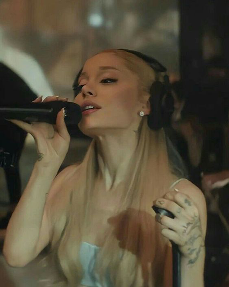
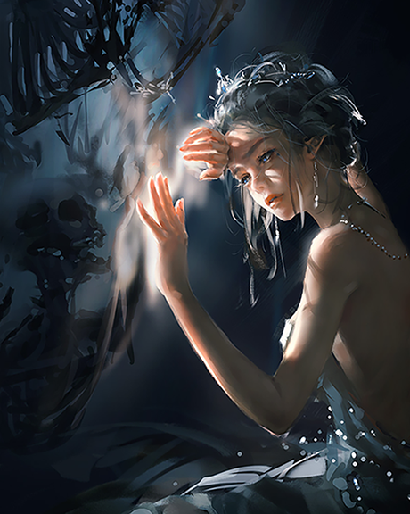
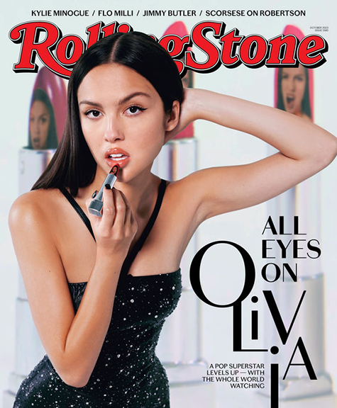

Hey! My name is Jing Ling.
These are the three artists that inspire me...
I am inspired by:
Ariana Grande

Her songs frequently explore relationships, intimate experiences, and the complexities of human emotions. She encourages me to embrace my uniqueness and face life's obstacles head-on with courage and tenacity in addition to advocating for empowerment.
I am inspired by:
Wang Ling

Wlop, the artistic pen name of Wang Ling, creations tell compelling stories, often set in imaginative and fantastical world. Seeing her artwork influences me to explore my own creativity and imagination.
I am inspired by:
Olivia Rodrigo

Her songs have a relatable quality that makes me feel seen and understood because of their genuineness and vulnerability. She encourages me to face my emotional challenges head-on with courage and honesty.